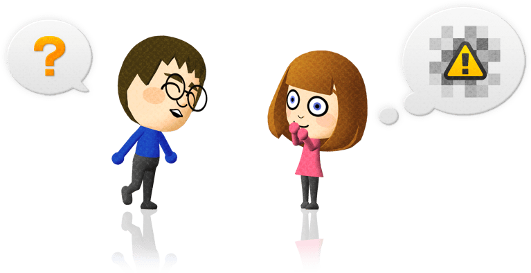
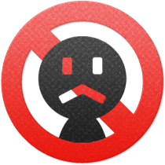
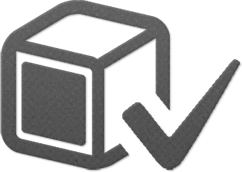

Welcome to WUT-Miiverse!
WUT-Miiverse is a community project that connects people through their Mii characters. Share your gaming experiences and discover what other players are talking about.

What is WUT-Miiverse?
WUT-Miiverse is a homebrew prototype inspired by the social experience shown for Wii U during the Miiverse era.

The goal is to support written or drawn posts in game communities and direct messages between friends as those backend features are implemented.
WUT-Miiverse Manners
Review these guidelines, then select Accept.
These guidelines describe the community WUT is being built to support. Server-side moderation is not active in this prototype yet.
Posts can be viewed around the world

Community posts and replies may be visible to people beyond your friends list.
Think about the full audience before publishing something and keep each post useful to its game community.
Be nice to one another

Treat other users with respect, including when you disagree about a game or a post.
Harassment, hateful attacks and deliberately disruptive content do not belong in WUT.
Keep personal information private

Do not share addresses, phone numbers, e-mail addresses, school or workplace information.
Protect your own details and never publish somebody else's private information.
Mark spoilers clearly

Story details and hidden game discoveries can spoil another player's experience.
When spoiler controls become available, use them before publishing revealing content.
Community rules will be enforced

The planned service will need reporting and moderation tools to keep communities usable.
The exact penalties and enforcement system are still pending a documented backend policy.
Played-game marks add useful context

Posts may eventually display a mark when WUT can verify that their author played the game.
This is a planned compatibility feature and is not verified by the current local prototype.
Selecting Accept confirms that you understand these prototype community guidelines.
Game experience
How would you describe your experience with games? This prototype keeps the choice only for this session.
Choose one option before continuing.
Ready to start using WUT-Miiverse
First, explore communities and see what players are sharing. It is a good way to learn how WUT is meant to work and find something unexpected along the way.


Have fun with WUT-Miiverse!
Select Start to save this setup for WUT-Miiverse.